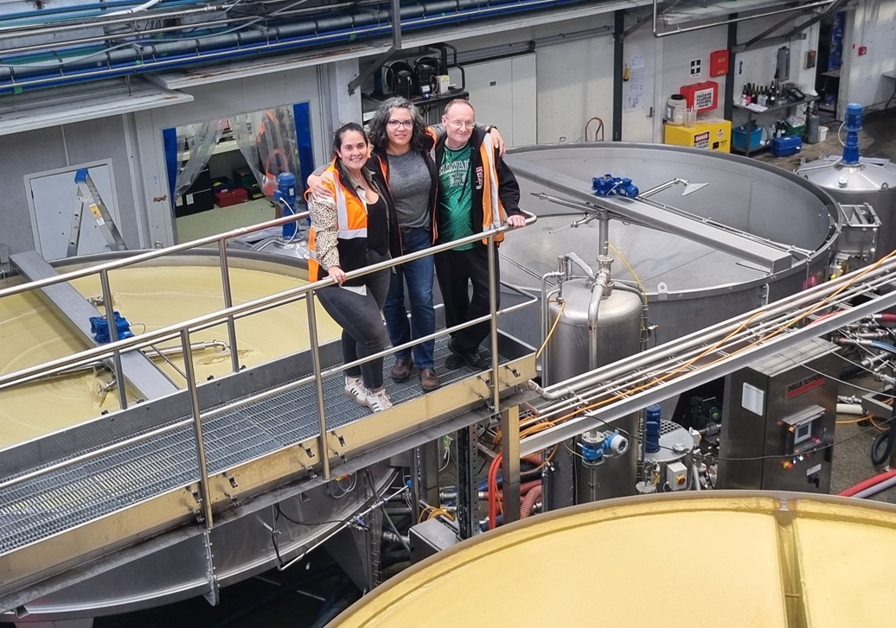

Fran, Allison and Me by the Wineries Continuous Floatation System March 2025
I developed the original Bulls-i winery management program for Indevin Ltd back in 2008 when they were just a small winery based in a single site in Blenheim, and only processing other client’s grapes into wine. Back then there were only 23 permanent staff adding 60 temporary staff during vintage (the two months of 24×7 chaos when grapes are harvested, received and processed into wine).
When I first arrived on the scene they had no IT staff, no technical people, a single Microsoft small business server supported by a local IT company and, like all startups, had a lot of growing pains. To Indevin’s credit, they learned quickly from their mistakes, and I usually reacted immediately to change the program to support them.
Today Indevin is the biggest wine company in New Zealand with four very different wineries including Villa Maria, and a dozen offices in both NZ and Australia. The original requirements of the program I wrote changed at least a dozen times, and far beyond its original requirements; At the start it did all its core winery duties of managing the grape and wine processing from receival to dispatch, and within a year or two we had added sales, purchasing, QA, maintenance, vineyard management and even at one point the payments for the vineyard contractors.
The IT (technology) department of Indevin now consists of twenty-seven people (and growing!), three programmers, and the rest split between business analysts, hardware support people and managers of various types. Their movement from a small/medium business into a corporate behemoth moved much quicker than at any previous company I have been involved with, and this, at times has been uncomfortable, with change requests even coming in on live production systems with trucks waiting to unload, and multiple late-night callouts. Plus, the two best months of the year I am almost always at one of their offices!
With the split-off of the core program sales, purchases, health and safety, maintenance, HR, viticulture, etc. systems, the IT department have taken the low-hanging fruit and, as of today Nov 2024, about 50% finished the program for the core winemaking. I have been supportive of these changes and have been helping wherever possible, because as a single developer I am really struggling to support all the sites and interfaces with the 24×7, almost immediate response time they demand. Also, since starting on this journey, Indevin has taken so much of my time I have not been able to support many of the open-source projects I first envisaged when I started the company.
So, hopefully without jinxing anything, 2025 will be my last vintage.
End of July 2025 will see the company replace the core winemaking parts of the systems and transfer the data over. The remainder of that year they will develop the front-end systems required to interface to the receival equipment for vintage which will require minimal consultation input from me. This means that after a holiday to the UK to visit family and friends, I will once again be available for other projects.
I doubt I will ever get on such a wild ride again, I am quite looking forward to being able to learn some new skills such as with the new LLM and AI models, and, assuming AI does not replace what I can do, working with other companies in the same position doing hands-on projects in slightly less chaotic environments.